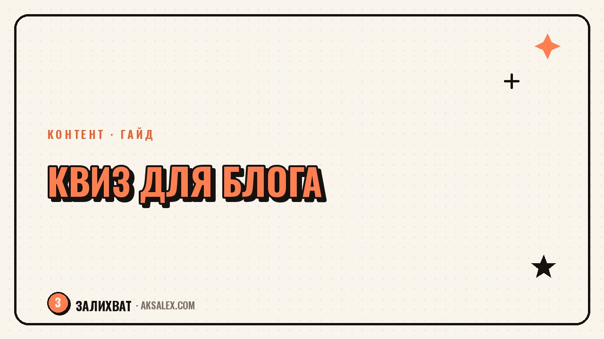

Как сделать тест или квиз для блога с нейросетью

Тесты и квизы в блогах собирают кучу сохранений и репостов, потому что людям интересно узнать что-то про себя и поделиться результатом. Но придумать десять вопросов с разными вариантами ответов и логичными результатами вручную - это час-два работы, которые не у каждого есть в графике. Нейросеть ускоряет именно эту часть: черновик вопросов, формулировки результатов и структуру теста. Разберём, как собрать рабочий квиз без лишней воды и какие ошибки чаще всего портят формат.
Почему тесты и квизы работают в блоге
Тест - один из немногих форматов, где подписчик сам хочет взаимодействовать с контентом, а не только смотреть. Ему интересно узнать результат про себя, и он чаще сохраняет пост или делится им в сторис с друзьями, чтобы сравнить ответы.
Второй плюс - квиз мягко продаёт. Если тест построен вокруг темы блога, например «какой у тебя тип прокрастинации», результат логично подводит к продукту или следующему посту без прямого призыва купить.
Когда тест не подойдёт
Квиз плохо работает, если вопросы слишком общие и результат мог выпасть кому угодно - подписчики быстро замечают подделку и теряют интерес к формату. Также тест не стоит делать на серьёзную тему без такта, например про здоровье или деньги, если результаты звучат как диагноз.
Как придумать вопросы с помощью нейросети
ChatGPT, YandexGPT и похожие сервисы хорошо справляются с черновиком вопросов, если дать им конкретную тему и структуру результатов заранее. Без этого нейросеть выдаст общие банальные вопросы, которые уже встречались в десятке других тестов.
Как составить запрос
- Назови тему теста и аудиторию блога: «тест про тип отдыха для подписчиц блога о ведении блога».
- Укажи количество вопросов и вариантов ответа - обычно 7-10 вопросов с 3-4 вариантами достаточно.
- Опиши заранее 3-4 типа результата, чтобы вопросы вели именно к ним, а не к случайному набору.
- Попроси сделать вопросы разными по формулировке, а не повторяющими одну и ту же конструкцию.
Черновик от нейросети почти всегда нужно доработать: заменить общие формулировки на конкретные примеры из жизни аудитории и добавить фирменный тон блога.
Формулировка результатов теста
Результат теста - самая важная часть, потому что именно его читают и сохраняют. Слабый результат звучит обобщённо: «ты творческий человек». Сильный результат называет конкретный тип, описывает его черты и даёт одну практическую рекомендацию.
Нейросеть хорошо помогает расписать несколько вариантов результата по одному шаблону, если дать ей пример одного готового результата и попросить сохранить структуру для остальных типов. Это экономит время и держит все результаты в одном стиле.
Подписчик делится тестом не потому что он правильный, а потому что результат звучит узнаваемо и немного льстит.
Где собирать и публиковать квиз
Формат зависит от площадки: в Instagram и Telegram квиз часто делают через серию вопросов в сторис с опросами или через бота, в блоге на отдельном сайте - через готовые конструкторы тестов.
Сервисы для разных площадок
- Стикеры-опросы в сторис Instagram - для короткого теста из 5-7 вопросов без отдельного инструмента.
- Telegram-бот с ветвящейся логикой - для теста, который должен показывать разный результат.
- Interacty, Playbuzz-подобные сервисы - для встраивания теста на сайт блога.
- Google Формы с баллами - самый доступный бесплатный вариант для email-рассылки.
Сравнение сервисов для создания квиза
Вот база инструментов, которые закрывают разные форматы теста без лишних затрат на старте.
| Сервис | Формат | Цена | Для кого подходит |
|---|---|---|---|
| ChatGPT / YandexGPT | Черновик вопросов и результатов | Бесплатно | Все площадки |
| Сторис Instagram | Опросы, вопросы с вариантами | Бесплатно | Короткий тест без ветвления |
| Telegram-бот | Квиз с логикой и результатами | От 500 ₽/мес | Телеграм-канал |
| Interacty | Встраиваемый квиз для сайта | От 1000 ₽/мес | Блог на своём сайте |
| Google Формы | Тест с подсчётом баллов | Бесплатно | Рассылка, короткий тест |
Частые ошибки при создании квиза
Самая частая ошибка - слишком много вопросов. Больше 10-12 вопросов подряд, и часть аудитории бросает тест на середине, не дойдя до результата, из-за которого всё затевалось.
Что ещё портит тест
- Варианты ответов настолько очевидно ведут к результату, что тест превращается в угадайку без интереса.
- Результаты не связаны с темой блога, и после теста подписчик забывает, о чём был аккаунт.
- Нет призыва после результата - куда перейти, если хочется больше материала по теме.
- Тест скопирован у другого блога почти без изменений - аудитория быстро это замечает.
Проверка перед публикацией простая: пройди тест сама глазами новой подписчицы и спроси, интересно ли узнать результат. Если ответ неочевидный - формулировки нужно доработать ещё раз, прежде чем выкладывать.
Частые вопросы
Сколько вопросов должно быть в тесте для блога
Оптимально 7-10 вопросов - этого достаточно, чтобы результат ощущался точным, но аудитория не устаёт проходить тест до конца. Больше 12 вопросов заметно снижает процент дошедших до результата.
Можно ли использовать готовый результат от нейросети без доработки
Лучше не стоит - черновик от нейросети звучит обобщённо и легко узнаётся как шаблонный текст. Добавь конкретные примеры из жизни своей аудитории и фирменный тон блога перед публикацией.
Какой сервис выбрать, если нет бюджета на тест
Для старта хватит бесплатных вариантов: опросы в сторис Instagram для короткого теста или Google Формы с подсчётом баллов для рассылки. Платные конструкторы нужны, если тест становится регулярным форматом блога.
Как придумать тему теста, если кажется, что всё уже было
Сузи тему до конкретной детали своей ниши вместо общей формулировки - не «какой ты человек», а «какой у тебя стиль ведения блога». Чем уже и конкретнее тема, тем меньше она похожа на тесты других блогеров.
Нужно ли показывать правильные ответы в развлекательном тесте
Нет, в развлекательном квизе про личность или предпочтения правильных ответов не бывает - каждый вариант ведёт к своему результату без оценки. Шкала баллов с правильными ответами уместна только в обучающих тестах на знание темы.
Раз тема оказалась полезной, вот что почитать следующим. Признаки усталости и признаки того, что дело разлюбил - и как не бросить сгоряча то, что на самом деле любишь.
Читать статью →а не вручную